CUBE MANUAL
PLL
最後の層の位置を入れ替え、完成へ導く

PLL 21種類を覚えよう
OLLで上面を揃えたあと、最後の層のパーツを入れ替えてキューブを完成させる手順がPLL（Permutation of Last Layer）です。全部で21種類あります。
初心者向けマニュアルでは、Tパーム、Yパーム、Uパームa、Uパームb、Zパーム、Hパームの6種類を紹介しています。この章では、残りの15種類を含むすべてのPLLを扱います。
初心者向けマニュアルの「上段コーナーを揃えよう」では、上段コーナーの側面の色を3つのパターンに分類しました。本書では、側面で同じ色が隣り合っている部分をブロックと呼びます。
- 1つの側面のコーナーの色が揃っている
- すべての側面でコーナーの色が揃っていない
- すべての側面でコーナーの色が揃っている
この分類に当てはめると、次のようになります。
- 1つの側面のコーナーの色が揃っている：Tパーム、Jパーム（a、b）、Fパーム、Rパーム（a、b）、Aパーム（a、b）、Gパーム（a、b、c、d）
- すべての側面でコーナーの色が揃っていない：Yパーム、Vパーム、Nパーム（a、b）、Eパーム
- すべての側面でコーナーの色が揃っている：Uパーム（a、b）、Zパーム、Hパーム
おすすめの習得順は次のとおりです。
- Uパーム（a、b）、Hパーム、Tパーム、Yパーム：2-look PLLで完成させるために必要な手順
- Zパーム、Fパーム、Jパーム（a、b）：第1段階の手順に似ていて覚えやすい
- Aパーム（a、b）、Vパーム、Rパーム（a、b）：独立した動きが多く、やや覚えにくい
- Gパーム（a、b、c、d）：4種類を関連づけて覚えやすい
- Nパーム（a、b）、Eパーム：出現率が低く、手順も長い
手順を始める前に、図と同じ向きになるようキューブを持ってください。「覚えやすさ」「回しやすさ」は筆者の目安で、5に近いほど覚えやすく、回しやすいことを表します。回転記号は回転記号の章で確認できます。
一覧から、練習したいケースを選んでください。
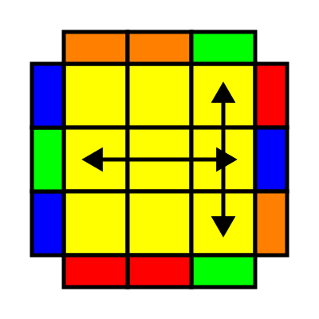
Tパーム
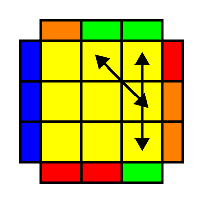
Jパームa
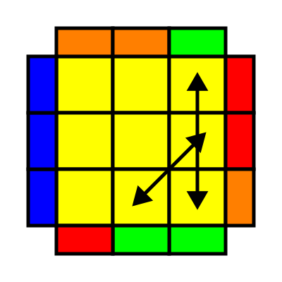
Jパームb
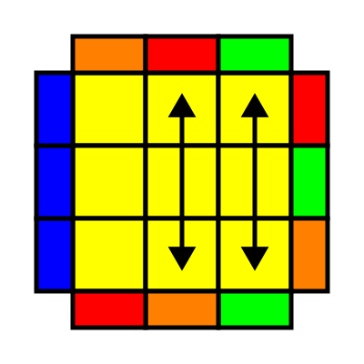
Fパーム
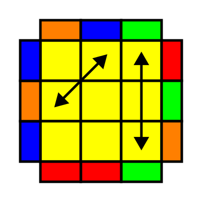
Rパームa
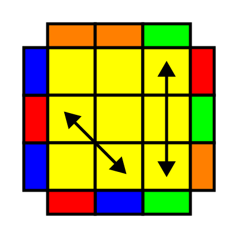
Rパームb
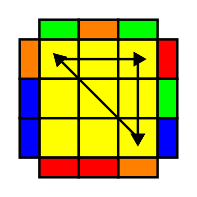
Aパームa
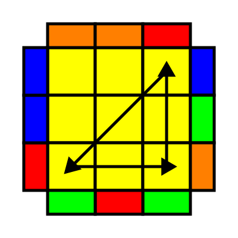
Aパームb
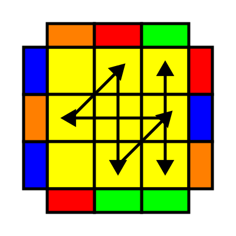
Gパームa
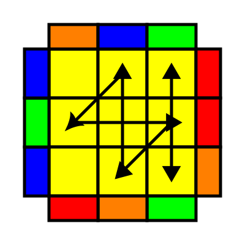
Gパームb
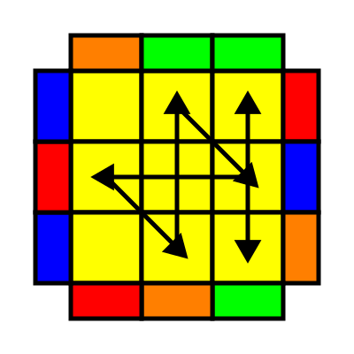
Gパームc
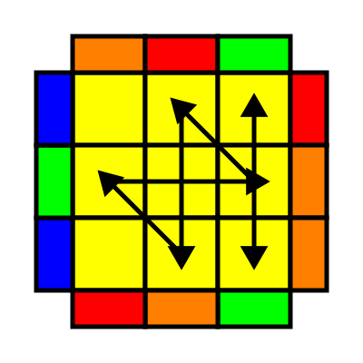
Gパームd
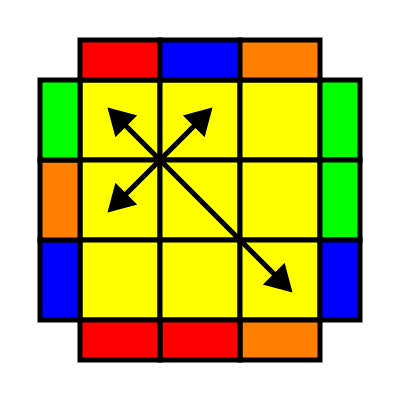
Yパーム
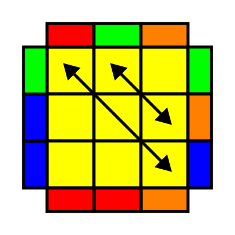
Vパーム
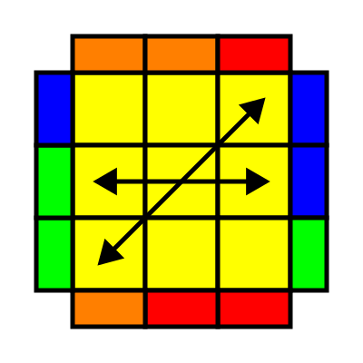
Nパームa
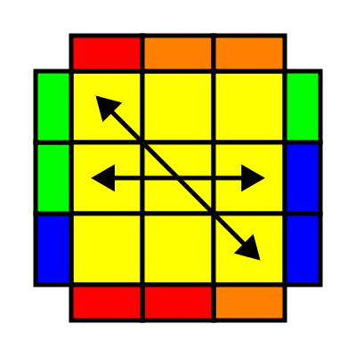
Nパームb
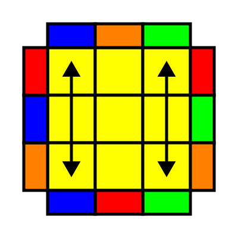
Eパーム
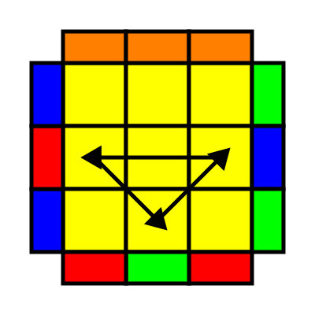
Uパームa
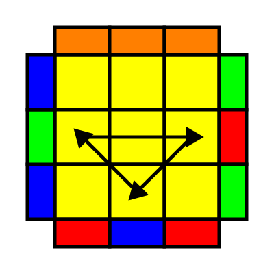
Uパームb
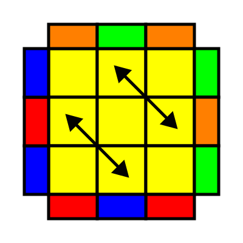
Zパーム
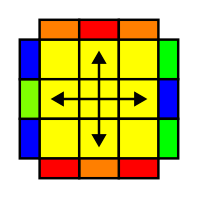
Hパーム
Tパーム
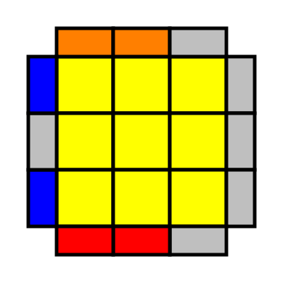
手順はこちらをクリック
(R U R' U') (R' F R2) (U' R' U') (R U R' F')
覚えやすさ：4
回しやすさ：5
見分け方：1つの側面でコーナーが揃っていて、揃っているコーナーにくっついてブロックが2つある。
覚えるコツ：括弧で区切ったフレーズに分けて覚えましょう。回しやすいので何度も回して手の動きを覚えましょう。Tパームを覚えることで派生的にいくつかのPLLも覚えられます。
Jパームa
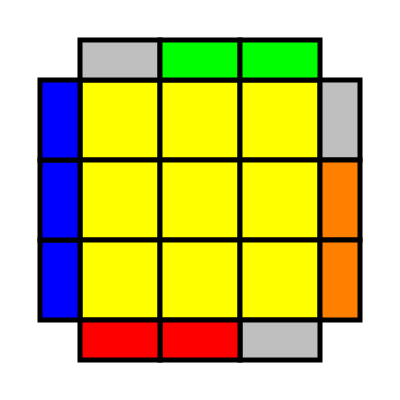
手順はこちらをクリック
x (R2' F R F' R U2) (Rw' U Rw U2)
覚えやすさ：4
回しやすさ：3
見分け方：1つの側面が完全に揃っていて、その他の側面に揃っているブロックが3つある。Jパームbとの違いは、揃っているブロックが左に寄っているところ。
覚えるコツ：前半と後半に分けて覚えると覚えやすいです。最初のキューブの回転と後半の2層回しに注意しましょう。
Jパームb
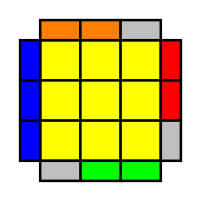
手順はこちらをクリック
(R U R' F') (R U R' U') (R' F R2) (U' R' U')
覚えやすさ：4
回しやすさ：5
見分け方：1つの側面が完全に揃っていて、その他の側面に揃っているブロックが3つある。Jパームaとの違いは、揃っているブロックが右に寄っているところ。
覚えるコツ：Tパームと同様、4つのフレーズに分けると覚えやすいです。Tパームの最後の4手を最初に持ってきたものと覚えるとよいでしょう。
Fパーム
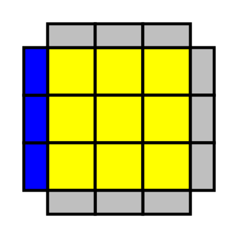
手順はこちらをクリック
(R' U' F') (R U R' U') (R' F R2) (U' R' U') (R U R' U R)
覚えやすさ：4
回しやすさ：5
見分け方：1つの側面が完全に揃っていて、その他の側面に揃っているブロックがない。
覚えるコツ：手順が長いですが、(R' U' F')の後はTパームと同じ手順が続くので、Tパームを覚えていればそれほど難しくありません。最後のフレーズだけ注意しましょう。
Rパームa
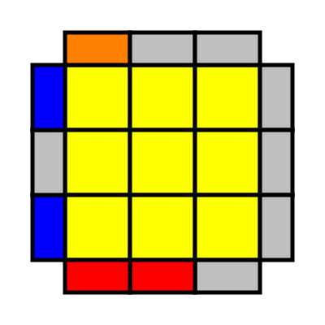
手順はこちらをクリック
(R U R' F') (R U2 R' U2') (R' F R) (U R U2' R' U')
覚えやすさ：3
回しやすさ：3
見分け方：1つの側面でコーナーが揃っていて、揃っているコーナーにくっついてブロックが1つある。Rパームbとの違いは、揃っているコーナーを左に向けたとき、ブロックが手前にあるところ。
覚えるコツ：Jパームbとよく似ているので、違いに注意して覚えましょう。やや覚えにくくあまり回しやすくないので、T,J,Fパームを覚えてから覚えるとよいでしょう。
Rパームb
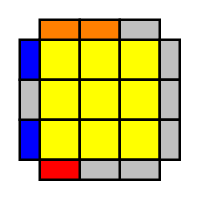
手順はこちらをクリック
(R2' F) (R U R U') (R' F') (R U2' R' U2') (R U)
覚えやすさ：2
回しやすさ：3
見分け方：1つの側面でコーナーが揃っていて、揃っているコーナーにくっついてブロックが1つある。Rパームaとの違いは、揃っているコーナーを左に向けたとき、ブロックが奥にあるところ。
覚えるコツ：他のPLLと全く違う手順なので覚えにくく、あまり回しやすくないので、T,J,Fパームを覚えてから覚えるとよいでしょう。
Aパームa
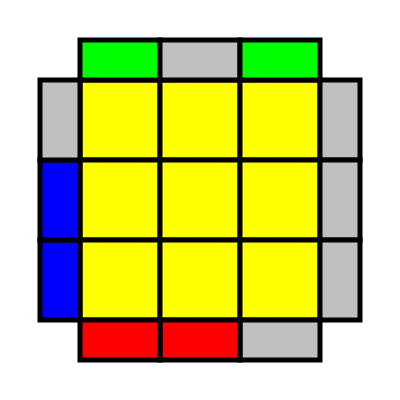
手順はこちらをクリック
x (R' U R') D2 (R U' R') D2 R2
覚えやすさ：4
回しやすさ：3
見分け方：1つの側面でコーナーが揃っていて、角で接して色が揃っているブロック(図では赤と青)が2つある。Aパームbとの違いは、揃っているコーナーを左に向けると、ブロックが右手前に来るところ。
覚えるコツ：他の1つの側面が揃っているPLLと違って、揃っているコーナーを背面に持ってくることに注意しましょう。最初のキューブの回転も忘れずに。
Aパームb
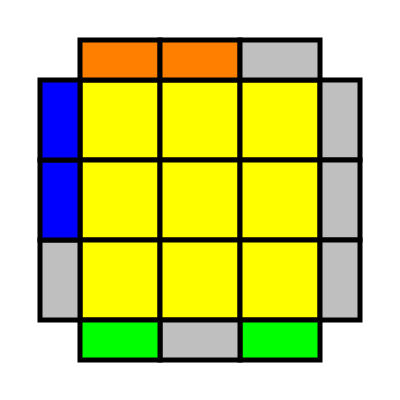
手順はこちらをクリック
x' (R U' R) D2 (R' U R) D2 R2
覚えやすさ：4
回しやすさ：3
見分け方：1つの側面でコーナーが揃っていて、角で接して色が揃っているブロック（図ではオレンジと青）が2つある。Aパームaとの違いは、揃っているコーナーを左に向けると、ブロックが右奥に来るところ。
覚えるコツ：他の1つの側面が揃っているPLLと違って、揃っているコーナーを手前に持ってくることに注意しましょう。最初のキューブの回転も忘れずに。
Gパームa
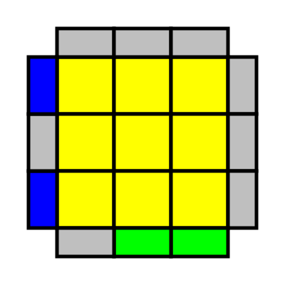
手順はこちらをクリック
(R2 U R' U R') (U' R U' R2) (D U' R' U R D')
覚えやすさ：3
回しやすさ：3
見分け方：1つの側面でコーナーが揃っていて、揃っているコーナーを左に向けたとき揃っているブロックが手前面右にある。
覚えるコツ：3フレーズ目のD U'は同時に回すとよいでしょう。Gパームは4つセットで覚えると覚えやすいです。
Gパームb
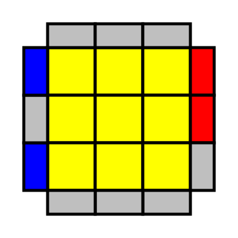
手順はこちらをクリック
(D R' U' R D' U) (R2' U R' U) (R U' R U' R2')
覚えやすさ：3
回しやすさ：3
見分け方：1つの側面でコーナーが揃っていて、揃っているコーナーを左に向けたとき揃っているブロックが右面奥にある。
覚えるコツ：1フレーズ目のD' Uは同時に回すとよいでしょう。Gパームaを逆に回すと覚えると覚えやすいです。
Gパームc
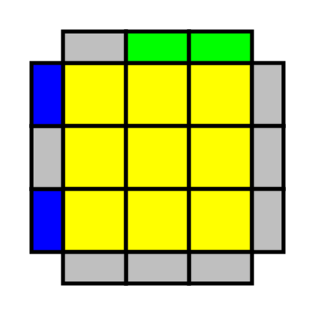
手順はこちらをクリック
(R2' U' R U' R) (U R' U R2') (U D' R U' R' D)
覚えやすさ：3
回しやすさ：3
見分け方：1つの側面でコーナーが揃っていて、揃っているコーナーを左に向けたとき揃っているブロックが背面右にある。
覚えるコツ：1フレーズ目のU D'は同時に回すとよいでしょう。Gパームaと似ていますが、回す向きが違うので注意しましょう。
Gパームd
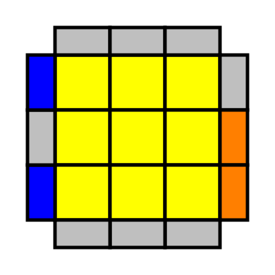
手順はこちらをクリック
(D' R U R' D U') (R2 U' R U') (R' U R' U R2)
覚えやすさ：3
回しやすさ：3
見分け方：1つの側面でコーナーが揃っていて、揃っているコーナーを左に向けたとき揃っているブロックが右面手前にある。
覚えるコツ：1フレーズ目のD U'は同時に回すとよいでしょう。Gパームcを逆に回すと覚えると覚えやすいです。
Yパーム
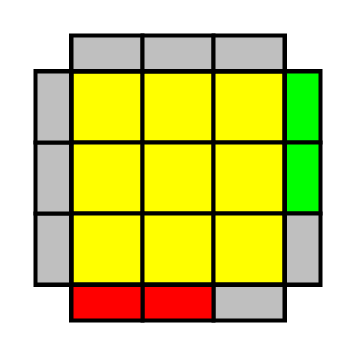
手順はこちらをクリック
(F R U R' U') (R U R' F') (R U R' U') (R' F R F')
覚えやすさ：4
回しやすさ：5
見分け方：すべての側面でコーナーが揃っておらず、揃っているブロックが角で接しておらず2つある。
覚えるコツ：前半と後半を入れ替えるとTパームと同じ手順になるので、Tパームと同時に覚えましょう。
Vパーム
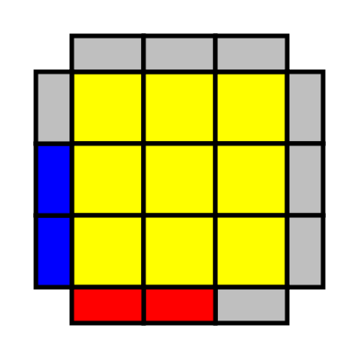
手順はこちらをクリック
(R' U R U') (R' Fw' U') (R U2' R' U' R U' R') (Fw R)
覚えやすさ：3
回しやすさ：4
見分け方：すべての側面でコーナーが揃っておらず、揃っているブロックが角で接して2つある。
覚えるコツ：3フレーズ目は初心者向けマニュアルの「上面を揃えよう」で紹介した魚型2と同じです。2層回しに注意しましょう。
Nパームa
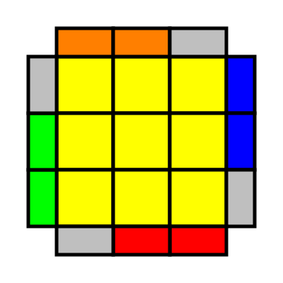
手順はこちらをクリック
(R U R' U) (R U R' F') (R U R' U') (R' F R2) (U R' U2' R U' R')
覚えやすさ：3
回しやすさ：4
見分け方：すべての側面でコーナーが揃っておらず、揃っているブロックが4つある。Nパームbとの違いは、揃っているブロックが右に寄っているところ。
覚えるコツ：非常に長い手順ですが、(R U R' U) (Jパームb) (U' R U' R')と覚えると覚えやすいです。
Nパームb
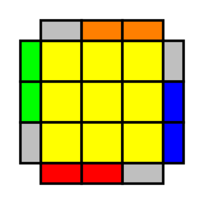
手順はこちらをクリック
(R' U R U') (R' F' U' F) (R U R') (F R' F' R) (U R)
覚えやすさ：2
回しやすさ：3
見分け方：すべての側面でコーナーが揃っておらず、揃っているブロックが4つある。Nパームaとの違いは、揃っているブロックが左に寄っているところ。
覚えるコツ：他に似たPLLもないため覚えにくく、出現確率も低いため、最後に覚えるのがおすすめです。
Eパーム
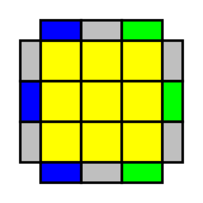
手順はこちらをクリック
x' (R U' R' D) (R U R' D') (R U R' D) (R U' R' D')
覚えやすさ：3
回しやすさ：3
見分け方：すべての側面でコーナーが揃っておらず、揃っているブロックがない。
覚えるコツ：持つ向きとU,D面の回転の向きに注意しましょう。持つ向きは左右の列に同じ色が3つ固まっている向きと覚えましょう。
Uパームa
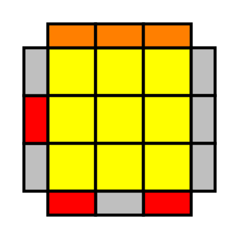
手順はこちらをクリック
M2' U M U2' M' U M2'
覚えやすさ：5
回しやすさ：4
見分け方：すべての側面でコーナーが揃っており、1つの側面が完全に揃っている。Uパームbとの違いは、手前面の色のエッジが左にあるところ。
覚えるコツ：覚えやすく、揃えるのに必須な手順なので最初に覚えましょう。
Uパームb
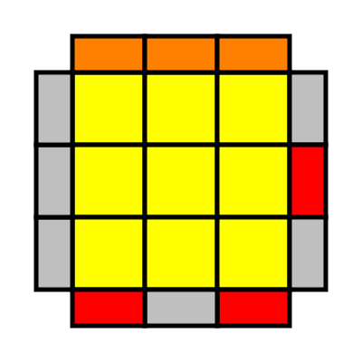
手順はこちらをクリック
M2' U' M U2' M' U' M2'
覚えやすさ：5
回しやすさ：4
見分け方：すべての側面でコーナーが揃っており、1つの側面が完全に揃っている。Uパームaとの違いは、手前面の色のエッジが右にあるところ。
覚えるコツ：覚えやすく、揃えるのに必須な手順なので最初に覚えましょう。
Zパーム
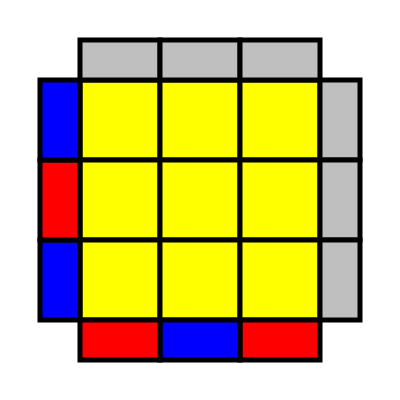
手順はこちらをクリック
U M' U' M2' U' M2' U' M' U2' M2'
覚えやすさ：4
回しやすさ：4
見分け方：すべての側面でコーナーが揃っているが、完全に揃っている側面がない。Hパームとの違いは、隣接2面で2色になっているところ。
覚えるコツ：持つ向きに注意しましょう。2色になっている側面が左と手前になるように持ちましょう。
Hパーム
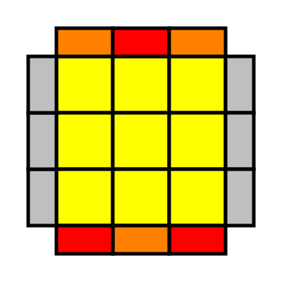
手順はこちらをクリック
M2' U' M2' U2' M2' U' M2'
覚えやすさ：5
回しやすさ：4
見分け方：すべての側面でコーナーが揃っているが、完全に揃っている側面がない。Zパームとの違いは、対面で2色になっているところ。
覚えるコツ：Uパームと似ているので、セットで覚えましょう。出現確率は低いです。